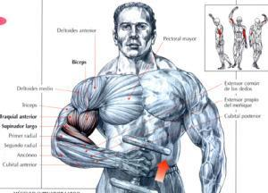

Welcome to Ejercicios efectivos de bíceps
4 ejercicios para unos bíceps más grandes - Entrenamiento brazos
2021.06.26 19:47Buscar Entrena con MH Fitness Reto MH Live Ejercicios en casa Ejercicios de abdominales Ejercicios para bíceps y tríceps Ejercicios de pecho Ejercicios de espalda Ejercicios de piernas y glúteos CrossFit Strongman Boxeo Desafío Calistenia MH Desafio MH 21 días Nutrición Dieta para verano Salud Perder peso Actualidad Hombres MH Estilo Zapatillas Sexo y relaciones Tecnología y gadgets Move On El poder de la positividad Buenas compras onnline Síguenos Facebook Twitter Instagram Youtube Flipboard Pinterest Política de cookies Aviso de privacidad Ediciones: US UK España Nederland ENTRENA con MH Fitness Nutrición Salud Estilo Síguenos ES ES Lo más leído 1 💪1 MES GRATIS entrenando con Men's Health 2 Toma el control de tu estilo y de tu barba Men s Health + Rowenta 3 Saúl Craviotto abandera el verano de Men's Health 4 Saúl Craviotto, a por el oro en CUPRA Men s Health + Cupra 5 Las 50 mejores posturas sexuales para el hombre
Men's Health participa en varios programas de afiliación de marketing, lo que significa que Men's Health recibe comisiones de las compras hechas a través de los links a sitios de los vendedores.
Entrenamiento de brazos: 4 ejercicios para unos bíceps enormes
Si quieres unos bíceps enormes y presumir de brazos a lo Arnold Schwarzenegger, apunta estos 4 ejercicios para un entrenamiento salvaje en el gimnasio.
Por Lauren Bedosky 06/10/2019 Constantinis Getty Images¿Cuál es el secreto para unos bíceps grandes? ¿Muchas o pocas repeticiones? ¿Un peso moderado o le metemos kilos? Para Marfred Suazo, entrenador personal en Nueva York, la clave está en "un peso moderado y un ratio de repeticiones altas para bombear a tope. Excedernos con los kilos hará que intervengan más los flexores de la muñeca y los antebrazos ". Y te propone estos 4 ejercicios para que tus brazos parezcan más gigantes.
Entrenamiento de bíceps: 4 ejercicios para bombear tus músculos
Antes de comenzar con la rutina, Suazo aconseja que gires el meñique hacia el pulgar en en el punto máximo del ejercicio. "Golpearás más la cabeza braquial y la cabeza interior de tu bíceps".
1- Curl de un solo brazo en banco inclinado
Entre 3 y 4 series, de 10 a 12 repeticiones, y 20 segundos de descanso entre series.
En un banco inclinado 45 grados, de pie y con una mancuerna, extiende tu brazo sobre el respaldo con la palma hacia arriba. Sube poco a poco hacia el hombro y aprieta el bíceps al llegar arriba, con el meñique girando hacia el pulgar; a continuación baja sin perder el control. Luego, lo mismo, pero con el otro brazo.
2- Curl con banda de resistencia
Entre 3 y 4 series, de 25 a 30 repeticiones, y 20 segundos de descanso entre series.
De pie y con una banda de resistencia pisada, agarra los extremos con las manos y, con las palmas hacia arriba, sube hasta tus hombros. Aprieta los bíceps al acabar el recorrido y mantén la tensión constante también en la bajada. Codos pegados al cuerpo siempre.
3- Curl con mancuernas en banco inclinado
4 series de 10 repeticiones y descanso de 15 a 20 segundos entre series.
Tumbado en un banco inclinado de 45 grados, y con una mancuerna en cada mano, suelta los brazos y mantén los codos pegados al cuerpo. Sube las pesas a la vez y, de nuevo, aprieta los bíceps en la parte superior y baja controladamente.
4- Curl de martillo de pie
4 series con esta secuencia: comienza con 12 repeticiones, aumenta el peso 3 kilos y haz otras 10, aumenta otros 3 y realiza 8 y, por último, añade otros 3 y ejecuta 7. Descansa solo al acabar la tercera serie. Para finalizar, tres series de 7, 10 y 12 pero en el sentido contrario, descontando kilos.
Buenas compras del mes
KappaPrimeriti
Hasta -55%
Pedro del HierroCortefiel
Hasta -70%
Levi's®Cortefiel
Hasta -30%
ESPRITPrimeriti
Hasta -70%
Protectores solaresSephora
Hasta -30%
NapapijriCortefiel
Hasta -20%
Gafas de SolAsos
Hasta -65%
Zapatos Asos Asos
Hasta -60%
Y ya sabes, espalda recta, mirada al frente, core firme y con las palmas una orientada hacia la otra. Codos pegados a los costados y apretar arriba los bíceps.
Men's Health US
Los accesorios fitness imprescindibles para ponerte en forma
Esterilla fitness TOPLUS amazon.es 31,99 € Comprar Comba Befekt Gears amazon.es Comprar Mancuernas ajustables Sportstech amazon.es 139,95 € Comprar Bandas en suspensión amazon.es 32,00 € Comprar Rueda abdominal Amonax amazon.es 13,99 € Comprar Rodillo de espuma FitBeast amazon.es 25,99 € Comprar Barra de dominadas GETS amazon.es 69,99 € Comprar Kit chaleco lastrado y lastres Proform elcorteingles.es 69,00 € Comprar Máquina de remo SportPlus amazon.es 305,20 € Comprar Semiesfera de equilibrio OcioDual amazon.es 46,90 € Comprar Kettlebell portátil TAVIEW 24,90 € Comprar Cajón pliométrico Gorilant amazon.es 99,20 € Comprar
Contenidos relacionados ¿Quiere los brazos de un Mister Olympia? El truco para disparar tus bíceps This content is created and maintained by a third party, and imported onto this page to help users provide their email addresses. You may be able to find more information about this and similar content at piano.io Publicidad - Sigue leyendo debajo Más de Buenas compras online Schwarzenegger y su vuelta como Conan el Bárbaro El bañador que más se vende este verano es este Publicidad - Sigue leyendo debajo ¿Vinagre de sidra de manzana para perder peso? Los mejores ejercicios con gomas elásticas 4 ejercicios con bandas para ganar más músculo Sí, los hombre también llevamos zapatos en verano Cómo raparte el pelo en casa en 4 sencillos pasos El Samsung Galaxy Watch3, rebajado en Prime Day Rack de entrenamiento para hacer dominadas en casa Prime Day: tu hidratante preferida por menos de 5€ Buenas compras online Ejercicios de brazos para bíceps y tríceps Fitness Entrenamiento de brazos: 4 ejercicios para unos bíceps enormes 4 ejercicios para reventar tus bíceps 5 ejercicios para unos bíceps más grandes 4 básicos para unos brazos más grandes Las 4 variantes del curl que piden tus bíceps Entrenamiento para unos brazos gigantes Contacto Hearst España Publicidad Suscríbete Entrena con MH Fitness Nutrición Perder peso Salud Estilo Men s Health marca perteneciente al grupo Hearst Magazines International Men's Health participa en varios programas de afiliación de marketing, lo que significa que Men's Health recibe comisiones de las compras hechas a través de los links a sitios de los vendedores. ©2021 Hearst España S.L. Todos los derechos sobre las marcas, imágenes y contenidos están protegidos. Aviso de privacidad Política de cookies Aviso Legal Sitemap Ajuste de Cookies
